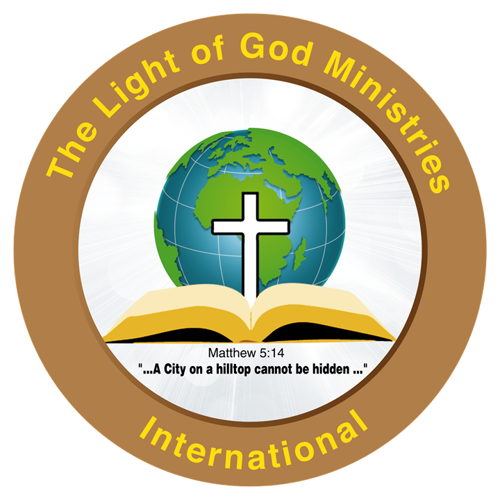
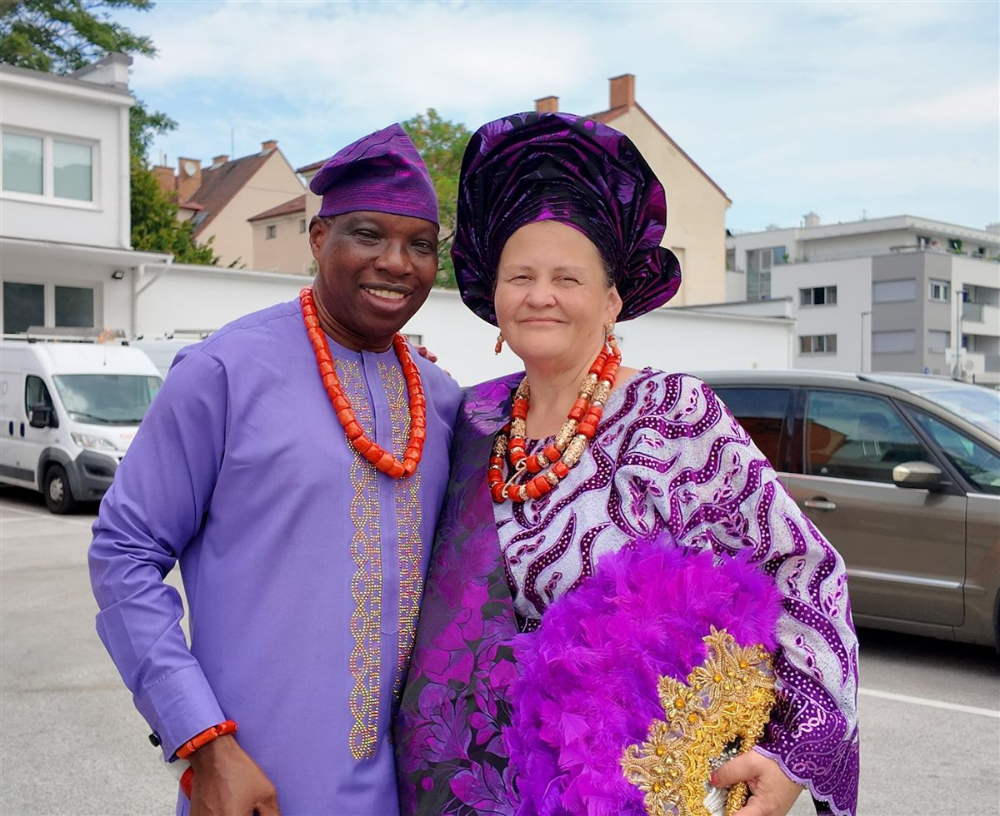

Wer wir sind
Über uns
The Light of God Ministries International ist eine evangelikale Gospel-Gemeinde in Wiener Neustadt, Österreich.

Unser Vers
“Ihr seid das Licht der Welt. Es kann die Stadt, die auf einem Berge liegt, nicht verborgen sein.” Matthäus 5,14
